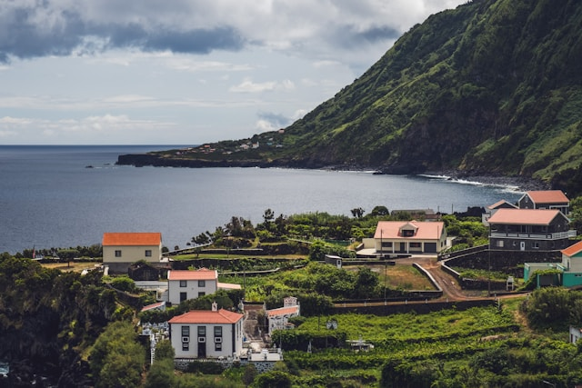
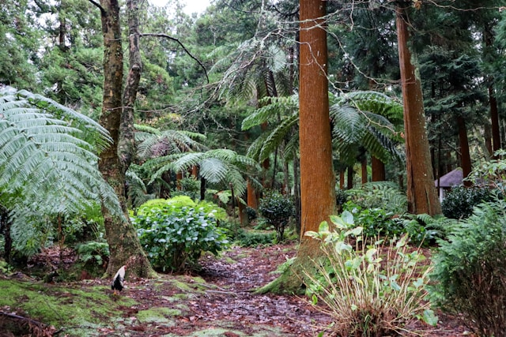

Sao Jorge
09.26-09.30
The island's dramatic cliffs and lush green landscapes provided stunning views during our hikes. We also enjoyed sampling the local cheese, which Sao Jorge is renowned for.


.jpg)
Today we arrived in the Azores. We were greeted by the beautiful landscape and the warm sun. We checked into our hotel and went to the beach. The water was cold but refreshing. We had dinner at a local restaurant and tried the local cuisine. We are excited to explore the island tomorrow.
We visited the famous Capelinhos Volcano, which offered a unique landscape of volcanic ash and lava fields. Later in the day, we went whale watching and were thrilled to see several whales up close in their natural habitat.
The island's dramatic cliffs and lush green landscapes provided stunning views during our hikes. We also enjoyed sampling the local cheese, which Sao Jorge is renowned for.
We spent a week on Sao Miguel exploring its lush landscapes and stunning volcanic craters. Each day was filled with adventures, from hiking trails to relaxing in natural hot springs.